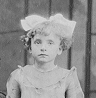

|  |
Grandma's Childhood |
|
Grandma was born in Plains on September 2, 1915 as the younger twin to Bede. In those days, doctors made house calls and the doctor came to the house to deliver her and her sister. The house where she was born was in Midvale, but Grandma was too young to remember this house. They moved to Mack Street, up the street from where she lived as an adult, when she was in first grade. At the Dmochowski residence, Polish was spoken in the house. Grandma learned English by playing with the other kids in the neighborhood. There were a number of different ethnic backgrounds in the neighborhood such as Irish, Italian, and Polish. Once she learned English, she was able to go to school and she attended 1st grade at Midvale school. When Grandma was 6 the family moved to 65 Rose Ave. Grandma's parents bought the house for $2100, and paid cash. She attended St's Peter and Paul school from 4th grade until 8th grade. She took such courses as religion, Polish history, arithmetic, reading and catechism. In her classroom, Polish was spoken in the morning and English in the afternoon. Dmochowski Family in 1923: Annie, Bede, Rosalia, Eddie, Stella, Hank, Adolph, and Elizabeth. The kids in Grandma's family didn't have toys. They spent their time doing chores and playing with the other kids in the neighborhood. Grandma remembers playing kick the can, tag, hopscotch, and relieve-eo. All the kids would play out in the streets because there were few cars in those days. Stella, grandma's sister, related to her daughter Nancy what she remembers as a child. She rembers her mom raising chickens, cooking, and cleaning the house. She was always cleaning the parlor, which was kept for special occasions or Sunday visiting. They had a player piano in the parlor for entertainment. On Sundays, the family would often gather in the dining room and listen to the radio. She also remembers Adolph making liquor in the shed. As mentioned before, the Dmochowski's didn't have toys when they were young. For Christmas, they would get stockings filled with oranges, candy, chocolates, etc. They used to read a lot, too. Grandma remembers going to the library once a week in the summer with Bede and returning with a shopping bag full of books. They would always get the maximum limit, 7, and read them all within the week. Grandma was 11 or 12 when her father bought their first car. Even though Grandma doesn't remember the make of the car, she remembers the car was a maroon touring car that was open air and had a crank. In the winter, they put on a snap top. The only other vehicle owned by someone in the neighborhood was the plumber's truck. As Grandma says, "Not bad for a greenie." (A greenie is someone who came from Europe.) Dmochowski Family in 1931: Back Row - Edward, Elizabeth, Annie, Pete Chernavage (Annie's Spouse), Stella, Bede Front Row - Josie, Rosalia, Julie, Adolph, Edmund The family never took vacations. Sometimes, Babci would make chicken and other picnic food and they would drive to Barbaccis Grove out towards Harvey Lake. Once or twice they traveled to Scranton to visit family. Grandma went to the public high school on Carey St. until she completed 11th grade. After she completed the 11th grade, her parents asked her to go to work instead of return for her senior year and she complied. Only the four youngest completed high school - Edmund, Edward, Josie, and Julie. The four oldest children quit school to begin working. When Grandma was 17, she began working at the cigar factory in Forty Fort. She would walk to work with others. The path to work included a walk on the train tracks that went over the Susquehanna River. In the summer, they worked 9 hours a day Monday through Friday and half day on Saturday. She was paid $18 per week and, initially, there were no taxes paid because it was before the New Deal. |